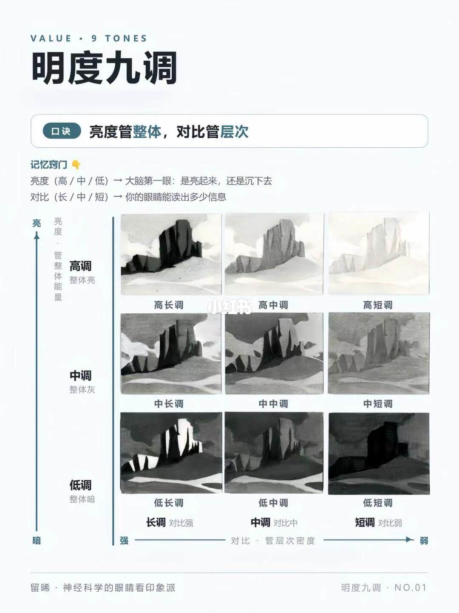
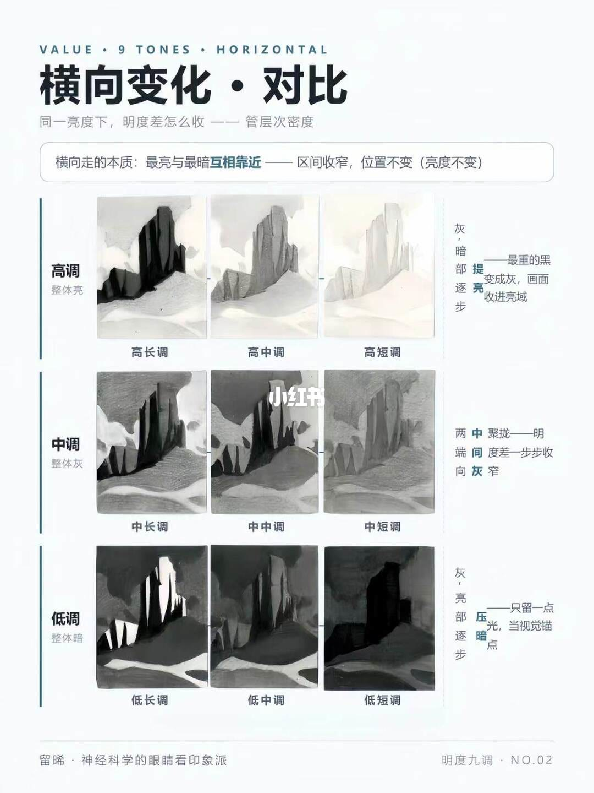
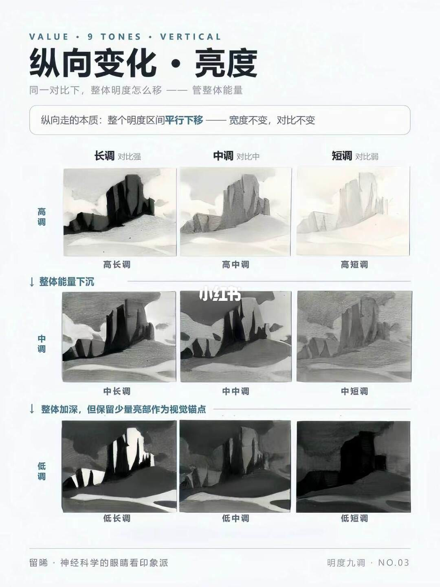

图文实录 · 小红书 · 留晞*
一张图，彻底记住明度九调
九调是一张 3×3：行是亮度（高、中、低），管画面整体是亮起来还是沉下去；列是对比（长、中、短），管眼睛能读出多少层次。横向只把最亮和最暗互相靠近，区间变窄、亮度位置不动；纵向把整段明度平移，宽度和对比不动。
1/3
先记住两根轴
页眉是 VALUE · 9 TONES，中文标题「明度九调」。口诀写着「亮度管整体，对比管层次」。记忆窍门两行：亮度（高/中/低）是大脑第一眼，看它亮起来还是沉下去；对比（长/中/短）是眼睛能读出多少信息。正文另外补了两个括注——对比对应层次密度，亮度对应整体能量——这两句括注不在这一页的窍门框里。
九格是同一座山岩的灰度图。上行标「高调 / 整体亮」，中行「中调 / 整体灰」，下行「低调 / 整体暗」。从左到右格子名是高长调、高中调、高短调，中长调、中中调、中短调，低长调、低中调、低短调。列脚是「长调 对比强」「中调 对比中」「短调 对比弱」。图底有一条从「强」指向「弱」的轴，轴上写「对比 · 管层次密度」，轴左下有「暗」。轴上是否还有「亮」，无法确认。

2/3
横向走：对比在收，亮度不动
页眉 VALUE · 9 TONES · HORIZONTAL，标题「横向变化 · 对比」。副题：「同一亮度下，明度差怎么收——管层次密度」。框内一句：「横向走的本质：最亮与最暗互相靠近——区间收窄，位置不变（亮度不变）」。三行仍标高调整体亮、中调整体灰、低调整体暗，格名与第 1 页相同。这一页没有再排「长调 / 中调 / 短调」的列脚。
每行右侧是竖排旁注，只能确认后半。高调行能读出「暗部逐步提亮——最重的黑变成灰，画面收进亮域」。中调行能读出「两端向中间聚拢——明度差一步步收」以及「向灰窄」。低调行能读出「只留一点光，当视觉锚点」，其中「压」「暗」被单独标出来；起首是否写成「灰、亮部逐步」，无法确认。

3/3
纵向走：整段下移，对比不动
页眉 VALUE · 9 TONES · VERTICAL，标题「纵向变化 · 亮度」。副题：「同一对比下，整体明度怎么移——管整体能量」。框内一句：「纵向走的本质：整个明度区间平行下移——宽度不变，对比不变」。列头在上方：长调对比强、中调对比中、短调对比弱。格名仍是高长调到低短调。
行与行之间有两句带向下箭头的旁注。高调落到中调时写「整体能量下沉」。中调落到低调时写「整体加深，但保留少量亮部作为视觉锚点」。这一页左侧是否另有「高调 / 中调 / 低调」行名，无法确认，行的身份以格子名和这两句箭头为准。

正文
图上没有的那一段
笔记正文用莫奈画鲁昂大教堂作例子：同一座教堂画了三十多遍，变的不是教堂，是不同时刻的光落进不同明度区间；并说印象派的灰调是用对比的长短，把光藏进统一的亮度里。正文预告下一篇才用这个工具去分析那些教堂，本篇三页里没有教堂图。正文末问：画不出层次时，是亮度没调对，还是对比没拉开。
记住九调，就是先定亮度带，再定对比宽窄。横向收的是层次，纵向移的是整体。格子上没有 0 到 10 的刻度，也没有色相和纯度。